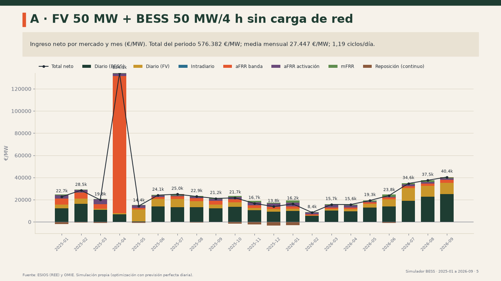

Ingreso neto de mercado de baterías en la península, 2025-01 a 2026-09. Optimización con datos públicos de ESIOS (REE) y OMIE.
Informe completo (PDF) · Radar semanal
| Escenario | Total periodo (€/MW) | Anualizado (€/MW·año) | Ciclos/día | Precio medio de descarga (€/MWh) |
|---|---|---|---|---|
| BESS 50 MW/4 h · realista (con profundidad de mercado) | 446.068 | 255.196 | 1,69 | 89 |
| Control · solo diario 50 MW/4 h (referencia Modo) | 211.173 | 120.812 | 1,41 | 103 |
| A · FV 50 MW + BESS 50 MW/4 h sin carga de red | 576.382 | 329.748 | 1,19 | 89 |
| B · FV 50 MW + BESS 50 MW/4 h con carga de red | 875.941 | 501.126 | 1,45 | 86 |
| C · BESS stand-alone 50 MW/4 h | 727.960 | 416.466 | 1,46 | 82 |





Previsión perfecta: cota superior de lo capturable. No incluye IVPEE, peajes, GdO, restricciones técnicas ni O&M. Fuente: ESIOS (REE) y OMIE. Elaboración propia.